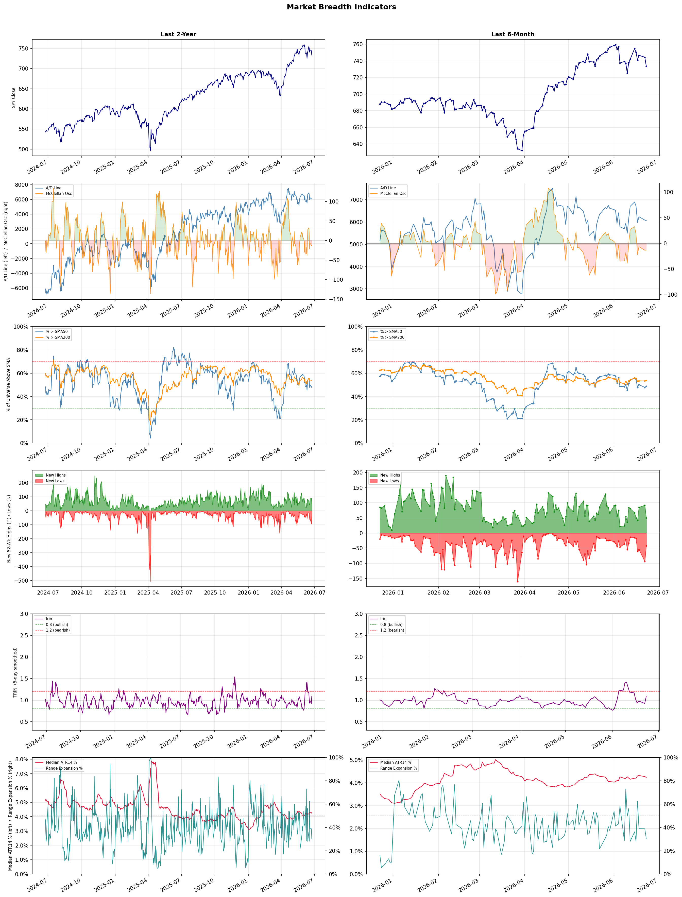

A daily market breadth and sector rotation report for active investors
| Item | Read |
|---|---|
| Regime | Neutral |
| Risk posture | Cautious |
| Universe | 1,346 stocks tracked · 50 new 52-week highs · 30 active swing setups |
| Breadth | only 48.8% of tracked stocks are above SMA50, new highs exceed new lows (50 vs 42), McClellan oscillator (breadth momentum) is negative at -13.2 |
| Leadership | Healthcare Plans, Airlines, and REIT - Hotel & Motel |
| Weakest groups | Financial Data & Stock Exchanges, Agricultural Inputs, and Gold |
Use this report to prioritize research and chart review; validate entries, stops, liquidity, earnings, and risk before acting.
| Item | Read |
|---|---|
| Primary read | Neutral regime with Cautious risk posture. |
| Research queue | CLOV, OSCR, HUM, CVS, ALHC |
| Leadership focus | Healthcare Plans, Airlines, and REIT - Hotel & Motel |
| Caution list | Financial Data & Stock Exchanges, Agricultural Inputs, and Gold |
| Review prompt | Check extension risk, chart location, fundamentals, valuation, and earnings before using any research row. |
| Item | Read |
|---|---|
| Primary read | 3 active risk warnings; use screen output as watchlist input only. |
| Bullish screens | TRV, DAL, BAC, MRVI, RLAY |
| Bearish screens | PLTR, WU, WHR, BABA, PDD |
| Alerts / levels | Automated trigger, stop, ATR, liquidity, reward/risk, and event-risk levels are pending future enrichment. |
| Review prompt | Open the linked chart, define trigger and invalidation, then check liquidity and event risk independently. |
Risk Posture: Cautious — screen backdrop is selective; prioritize research in top-ranked groups
Metric context: McClellan below -50 = elevated selling pressure; below -100 = washout territory. Range Expansion = share of stocks with daily range above their 20-day average. Signal Density = share of tracked names appearing in signal screens.
| Breadth Date | % > SMA50 | % > SMA200 | New Highs | New Lows | McClellan | Median Range | Avg Range | Median ATR14 | Range Expansion | Signal Density |
|---|---|---|---|---|---|---|---|---|---|---|
| 2026-06-23 | 48.8% | 53.9% | 50 | 42 | -13.2 | 3.1% | 3.8% | 4.2% | 30.1% | 1.7% |

Prior comparison date: June 22, 2026
| Metric | Prior | Current | Change |
|---|---|---|---|
| Regime | Neutral | Neutral | unchanged |
| Risk Posture | Cautious | Cautious | unchanged |
| % > SMA50 | 47.9% | 48.8% | +0.9 pts |
| % > SMA200 | 53.4% | 53.9% | +0.5 pts |
| New Highs | 92 | 50 | -42 |
| New Lows | 94 | 42 | +52 |
Top-10 industries entering: Biotechnology and Diagnostics & Research. Top-10 industries leaving: Rental & Leasing Services and Semiconductors. New multi-signal long setups: AEE, AFL, ALKS, ALL, ASB, BAC, CFG, CVBF, DHC. New multi-signal short setups: BABA.
| Status | Tickers | Read |
|---|---|---|
| Added | AEE, AFL, ALKS, ALL, ASB, BABA, BAC, CFG | New technical screen matches vs prior report. |
| Removed | ADI, ALAB, AMAT, APLE, BEAM, BTSG, CLOV, COHU | No longer present in today's technical screen matches. |
| Still Active | DAL, LFST, PLTR, RLAY, WU | Appeared in both current and prior reports. |
| Promoted | none | Model Screen Score improved by at least 15 points. |
| Downgraded | none | Model Screen Score declined by at least 15 points. |
| Direction | Industry | ETF | Prior Rank | Current Rank | Days | Rank Change |
|---|---|---|---|---|---|---|
| Rose | Airlines | N/A | 78 | 2 | 35 | +76 |
| Rose | Building Products & Equipment | XHB | 94 | 20 | 35 | +74 |
| Rose | Packaging & Containers | N/A | 92 | 22 | 42 | +70 |
| Rose | Diagnostics & Research | N/A | 72 | 9 | 42 | +63 |
| Rose | Insurance - Property & Casualty | KIE | 71 | 14 | 14 | +57 |
Bull: The airline industry is experiencing a rising relative strength trend primarily due to robust demand recovery post-pandemic, which is highlighted by positive sentiment in articles like "Best Airline Stocks to Buy Now" from Zacks and The Motley Fool. Despite recent pressures from profit warnings, the underlying factors such as increased travel demand, operational improvements, and capacity expansion suggest a strong rebound, positioning airlines favorably compared to other sectors. Additionally, the focus on strategic investments and cost management, as seen in discussions around United Airlines' performance, indicates a resilient operational outlook that can drive long-term growth.
Bear: While the bull thesis emphasizes robust demand recovery and operational improvements, it overlooks significant headwinds facing the airline industry, including rising fuel costs, labor shortages, and potential economic downturns that could dampen consumer spending on travel. Additionally, the recent sector-wide profit warnings indicate that airlines may be struggling to maintain profitability despite increased demand, suggesting that the current optimism may be overly optimistic and not fully accounting for the cyclical nature of the industry and its vulnerability to external shocks.
Verdict: The airline industry's rising trend is fundamentally driven by a robust recovery in travel demand post-pandemic, supported by operational improvements and strategic investments that enhance profitability. However, key risks remain, particularly from rising fuel costs and potential economic downturns that could negatively impact consumer spending on travel, necessitating careful monitoring of these external factors as the industry navigates its recovery. Investors should weigh the strong demand signals against these vulnerabilities when considering airline stocks.
Sources: Google News
Bull: The Building Products & Equipment sector is likely experiencing rising relative strength due to a combination of improving sentiment in the housing market, as indicated by headlines discussing Lennar and PulteGroup's stock performance, suggesting a potential recovery in homebuilding activity. Additionally, steady capital investment in new building materials and distribution, as highlighted in the recent financial reports, signals robust demand and innovation within the sector, further bolstering investor confidence despite concerns over mortgage rates. This positive momentum positions the sector favorably compared to others, attracting bullish sentiment.
Bear: While the recent headlines may suggest a recovery in the housing market, the underlying fundamentals remain concerning, particularly with the looming threat of rising mortgage rates which could dampen buyer affordability and demand. Additionally, the steady capital investment in building materials may not translate to sustainable growth if the broader economic environment remains uncertain, leading to potential overcapacity and price pressures in the sector. Thus, the apparent rising relative strength could be misleading, masking deeper vulnerabilities that could impact long-term performance.
Verdict: The Building Products & Equipment sector is experiencing rising relative strength primarily due to improving sentiment in the housing market, bolstered by strong stock performances from key players like Lennar and PulteGroup, alongside continued capital investment in innovative building materials. However, investors should remain cautious of the key risk posed by rising mortgage rates, which could significantly hinder buyer affordability and dampen demand, potentially undermining the sector's growth trajectory. It is advisable to monitor economic indicators closely and consider diversifying investments to mitigate exposure to these risks.
Sources: Yahoo Finance, Google News
Bull: The Packaging & Containers sector is likely experiencing rising relative strength due to its resilience in the face of macroeconomic challenges, such as the Iran war, which has impacted various industries more severely. Despite the turmoil, analysts are identifying opportunities within the sector, as highlighted by the Yahoo Finance article that mentions two paper and packaging stocks worth buying, indicating investor confidence in the sector's fundamentals. Additionally, the mention of Mondi having a clear analyst picture suggests that certain companies within the industry are well-positioned to navigate current challenges, further bolstering the sector's relative strength.
Bear: While the relative strength trend may appear positive, it is crucial to recognize that the packaging and containers sector is facing significant headwinds due to the ongoing geopolitical tensions, particularly the Iran war, which has disrupted supply chains and increased costs. The bullish sentiment may be overly optimistic, as the articles highlight underperformance in key stocks like International Paper, suggesting that investor confidence may not be as robust as portrayed. Furthermore, the identification of "buy" opportunities does not negate the broader industry woes, indicating that any gains could be short-lived amid persistent macroeconomic uncertainties.
Verdict: The Packaging & Containers sector is likely benefiting from its inherent resilience and adaptability, allowing it to capitalize on demand even amid geopolitical tensions and supply chain disruptions. However, the key risk lies in the potential for ongoing macroeconomic uncertainties, such as rising costs and underperformance in major stocks, which could undermine the sector's momentum and investor confidence. Investors should closely monitor these external factors while considering opportunities within well-positioned companies.
Sources: Google News
Bull: The Diagnostics & Research sector is experiencing a rise in relative strength due to a renewed investor interest in high-margin diagnostics stocks, as highlighted by Kalkine's report on investor returns in June 2026. This trend is further supported by positive stock analyses, such as Revvity, Inc. showcasing a compelling upside potential, and Waters' 5.3% jump amid a sector-wide rally, indicating strong market confidence and robust growth prospects within the industry. Additionally, the favorable reviews from Morningstar and ongoing positive sentiment reflected in Quest Diagnostics' performance suggest a broader recovery and optimism in the healthcare diagnostics space.
Bear: While the recent uptick in the Diagnostics & Research sector may suggest renewed investor interest, it is crucial to consider the underlying volatility and potential overvaluation in this space. High-margin diagnostics stocks often face intense competition and regulatory scrutiny, which can lead to unpredictable earnings and market sentiment. Moreover, the broader economic environment, including rising interest rates and inflationary pressures, could dampen investor enthusiasm, making the current rally more of a speculative bubble than a sustainable trend.
Verdict: The Diagnostics & Research sector's recent rise is fundamentally driven by renewed investor interest in high-margin diagnostics stocks, buoyed by strong performance indicators and positive market sentiment, particularly around companies like Revvity, Inc. and Quest Diagnostics. However, investors should remain cautious of the key risks posed by potential overvaluation, intense competition, and economic headwinds such as rising interest rates and inflation, which could undermine the sustainability of this rally.
Sources: Google News
Bull: The rising relative strength of the Property & Casualty insurance sector, as evidenced by the positive sentiment surrounding the State Street SPDR S&P Insurance ETF (KIE) and strong performance from companies like Enact Holdings and Progressive Corporation, suggests robust demand for insurance products amid a stabilizing economic environment. Additionally, the recent Q1 earnings roundup indicates that while there are margin pressures, companies are effectively managing costs and adapting to market conditions, which bodes well for future profitability and investor confidence in the sector.
Bear: While the relative strength of the Property & Casualty insurance sector may appear positive, it is crucial to recognize that rising interest rates and inflationary pressures are significantly impacting underwriting margins and investment returns. Furthermore, the recent Q1 earnings roundup highlights margin pressures that could undermine long-term profitability, suggesting that the sector's current performance may be more a function of market speculation than sustainable growth. Investors should remain cautious, as potential economic downturns or increased claims from natural disasters could further strain the industry's financial health.
Verdict: The Property & Casualty insurance sector is experiencing rising strength due to robust demand for insurance products and effective cost management by companies like Enact Holdings and Progressive Corporation, despite margin pressures highlighted in recent earnings reports. However, investors should remain cautious of the key risk posed by rising interest rates and inflation, which could further squeeze underwriting margins and investment returns, potentially undermining long-term profitability. It is advisable to closely monitor economic indicators and claims trends before making investment decisions in this sector.
Sources: Yahoo Finance, Google News
| Direction | Industry | ETF | Prior Rank | Current Rank | Days | Rank Change |
|---|---|---|---|---|---|---|
| Fell | Chemicals | N/A | 12 | 83 | 42 | -71 |
| Fell | Oil & Gas Integrated | XLE | 9 | 80 | 35 | -71 |
| Fell | Oil & Gas Equipment & Services | XES | 3 | 74 | 35 | -71 |
| Fell | Oil & Gas E&P | XOP | 14 | 85 | 35 | -71 |
| Fell | Aerospace & Defense | ITA | 13 | 79 | 28 | -66 |
Bear: While the bull analyst attributes the Chemicals sector's decline to macroeconomic pressures and geopolitical factors, it is essential to recognize that the industry's fundamental challenges extend beyond these external influences. The rising costs of raw materials, increased regulatory scrutiny, and a shift towards sustainable and alternative chemical solutions are creating long-term headwinds that could stifle growth and profitability for traditional chemical companies. Moreover, the competitive advantage of China's coal chemicals sector may not only divert investment but also signal a broader shift in industry dynamics that could leave established players struggling to adapt.
Bull: The Chemicals sector is experiencing a decline in relative strength primarily due to macroeconomic pressures and geopolitical factors impacting global supply chains. As highlighted in the recent headlines, the ongoing conflict in Iran is benefiting China's coal chemicals sector, which may be diverting investment and attention away from traditional petrochemical competitors, thereby affecting overall sector performance. Additionally, while the broader market is seeing a rally in basic materials, the Chemicals sector may be lagging due to specific challenges faced by key players like Air Products and Chemicals (APD), which is underperforming compared to its peers.
Verdict: The Chemicals sector is likely experiencing a decline due to a confluence of macroeconomic pressures and fundamental challenges, including rising raw material costs and increased regulatory scrutiny, which are exacerbated by geopolitical factors such as the conflict in Iran benefiting China's coal chemicals sector. The key risk from the bear case is that traditional chemical companies may struggle to adapt to these shifting dynamics and the growing demand for sustainable alternatives, potentially stifling growth and profitability. Investors should closely monitor these trends and consider reallocating resources to companies that are proactively addressing these challenges.
Sources: Google News
Bear: While the bull analyst points to resilience in energy stocks and a potential rebound driven by positive long-term outlooks, the reality is that the oil and gas integrated sector is facing significant headwinds, including ongoing volatility in crude oil prices, increasing regulatory pressures related to climate change, and a shift towards renewable energy sources that could undermine demand for fossil fuels. Furthermore, the recent uptick in energy stocks may be more of a short-term reaction to market fluctuations rather than a sustainable trend, especially as broader economic uncertainties persist and investor sentiment remains cautious.
Bull: The Oil & Gas Integrated sector is experiencing a decline in relative strength primarily due to broader market concerns, particularly around technology stocks, as indicated by headlines mentioning mixed U.S. equities and AI spending worries. Additionally, while energy stocks have shown some resilience with late-afternoon rises, the overall sentiment in the market is cautious, likely driven by macroeconomic factors that are weighing on investor confidence across sectors. However, the positive outlook from sources like U.S. News and The Motley Fool, highlighting strong investment opportunities in oil stocks for 2026, suggests that this sector may rebound as fundamentals remain robust.
Verdict: The Oil & Gas Integrated sector's decline is primarily driven by macroeconomic uncertainties, including volatility in crude oil prices and investor caution stemming from broader market concerns, particularly around technology stocks. The key risk highlighted by the bear case is the increasing regulatory pressures and the accelerating shift towards renewable energy, which could significantly diminish long-term demand for fossil fuels. Investors should closely monitor these dynamics and consider the potential for further declines if macroeconomic conditions do not stabilize.
Sources: Yahoo Finance, Google News
Bear: While the bull analyst attributes the decline in relative strength of the XES ETF to broader market sentiment and alternative investments, a more pressing concern is the potential for long-term structural changes in the energy sector, including increasing regulatory pressures and a global shift towards renewable energy sources. This transition could lead to reduced demand for oil and gas equipment and services, making it difficult for companies within the ETF to maintain profitability and growth, regardless of short-term oil price fluctuations. Additionally, the recent headlines highlighting that not all energy stocks are winners suggest that even in a rising oil price environment, many companies may struggle to capitalize on these gains, further undermining the case for investment in this sector.
Bull: The Oil & Gas Equipment & Services sector, represented by the SPDR S&P Oil & Gas Equipment & Services ETF (XES), is likely experiencing a decline in relative strength due to the broader market's cautious sentiment towards energy stocks, as highlighted by headlines indicating that not all energy stocks are benefiting from the recent oil price surge. Additionally, the focus on alternative investments and the emergence of ETFs designed to capitalize on oil price increases without direct exposure may be diverting capital away from traditional equipment and services stocks, contributing to their relative underperformance.
Verdict: The Oil & Gas Equipment & Services sector is likely experiencing a decline due to a combination of cautious market sentiment and the increasing attractiveness of alternative investments, which are drawing capital away from traditional stocks. However, a key risk to consider is the long-term structural shift towards renewable energy and heightened regulatory pressures, which could significantly reduce demand for oil and gas services, impacting profitability and growth prospects in the sector. Investors should closely monitor these trends and consider diversifying into more sustainable energy investments to mitigate potential losses.
Sources: Yahoo Finance, Google News
Bear: While the bull analyst highlights supply constraints and geopolitical tensions as potential catalysts for the Oil & Gas E&P sector, these factors also introduce significant volatility and uncertainty, which can deter long-term investment. The recent pullback in crude oil prices, coupled with rising production costs and potential regulatory pressures aimed at addressing climate change, may further erode profit margins and investor confidence. Additionally, the market's focus on short-term gains may overshadow the fundamental challenges facing the sector, leading to a bearish outlook as investors seek safer, more stable investments in a turbulent economic environment.
Bull: The Oil & Gas E&P sector is experiencing a decline in relative strength primarily due to a recent pullback in crude oil prices, despite significant supply constraints highlighted by the headlines. The spike in crude oil to $114 and ongoing geopolitical tensions, such as the Hormuz crisis, have created volatility that may lead investors to seek more stable opportunities in other sectors, even as energy ETFs show potential for gains amid these challenges. Additionally, while there are positive earnings outlooks for 2026, the immediate market sentiment appears to be overshadowed by concerns over price fluctuations and geopolitical risks.
Verdict: The Oil & Gas E&P sector is experiencing a decline primarily due to a recent pullback in crude oil prices, which has heightened investor concerns over volatility and profit margins amidst rising production costs and regulatory pressures. The key risk from the bear case is that ongoing geopolitical tensions may not be sufficient to offset the fundamental challenges of price fluctuations and climate-related regulations, prompting investors to prioritize stability over potential short-term gains. As such, market participants should closely monitor crude oil price trends and regulatory developments before making investment decisions in this sector.
Sources: Yahoo Finance, Google News
Bear: While the bull analyst points to a cooling off period in European defense spending as a temporary setback, this could signal a more profound and sustained downturn in the Aerospace & Defense sector. The headlines indicate a shift in focus towards autonomous weapons and advanced technologies, which may not translate into immediate revenue growth for traditional defense contractors, potentially leaving them vulnerable to competitive pressures and valuation corrections in a market that is already experiencing declining relative strength. Furthermore, geopolitical uncertainties and the potential for reduced military budgets in the face of economic challenges could exacerbate these issues, undermining the sector's long-term viability.
Bull: The Aerospace & Defense sector is experiencing a decline in relative strength largely due to a cooling off period in European defense spending after a significant surge, as highlighted in the CNBC article. Additionally, the focus on autonomous weapons and the potential for a shift in investment strategies, as noted in multiple headlines, suggests that while there is ongoing interest in defense technologies, the immediate growth momentum may be waning, leading to a reassessment of valuations within the sector. This transitional phase could create opportunities for long-term investors as companies adapt to evolving defense needs.
Verdict: The Aerospace & Defense sector's decline appears driven by a cooling off in European defense spending following a post-crisis surge, coupled with a shift towards autonomous weapons that may not yield immediate revenue for traditional contractors. Key risks include geopolitical uncertainties and potential reductions in military budgets, which could further undermine the sector's growth prospects and lead to valuation corrections. Investors should closely monitor defense spending trends and technological advancements to identify potential opportunities amidst this transitional phase.
Sources: Yahoo Finance, Google News
| Industry | Rank | ETF | 7d | 14d | 28d | 42d | Chg 42d | Size | 20D | 60D | Composite | Active Setups |
|---|---|---|---|---|---|---|---|---|---|---|---|---|
| Healthcare Plans | 1 | IHF | 3 | 2 | 11 | 4 | +3 | 10 | 15.1% | 73.9% | 0.950 | 0 |
| Airlines | 2 | N/A | 7 | 16 | 21 | 76 | +74 | 8 | 19.1% | 35.6% | 0.935 | 1 |
| REIT - Hotel & Motel | 3 | XLRE | 6 | 3 | 7 | 15 | +12 | 9 | 15.4% | 33.1% | 0.914 | 0 |
| Semiconductor Equipment & Materials | 4 | SOXX | 2 | 28 | 5 | 3 | -1 | 17 | 11.8% | 68.4% | 0.913 | 0 |
| REIT - Office | 5 | XLRE | 8 | 5 | 17 | 19 | +14 | 8 | 11.9% | 41.9% | 0.889 | 0 |
| Banks - Diversified | 6 | N/A | 9 | 14 | 14 | 36 | +30 | 16 | 8.5% | 23.6% | 0.874 | 0 |
| Biotechnology | 7 | XBI | 34 | 46 | 27 | 33 | +26 | 93 | 12.3% | 22.5% | 0.848 | 2 |
| Computer Hardware | 8 | XLK | 1 | 6 | 2 | 2 | -6 | 15 | 6.2% | 86.2% | 0.848 | 1 |
| Diagnostics & Research | 9 | N/A | 11 | 8 | 46 | 72 | +63 | 16 | 13.5% | 21.2% | 0.846 | 1 |
| Electronic Components | 10 | XLK | 5 | 4 | 8 | 8 | -2 | 10 | 3.6% | 69.3% | 0.834 | 0 |
Rank columns (7d–42d) show the industry's rank that many trading days ago — lower is stronger. Chg 42d = rank change vs 42 trading days ago — positive means the industry moved up. 20D and 60D are the mean stock return within the industry over that period. Active Setups: count of today's swing-trade candidates from this industry appearing across all signal screens.
| Industry | Rank | ETF | 7d | 14d | 28d | 42d | Chg 42d | Size | 20D | 60D | Composite | Active Setups |
|---|---|---|---|---|---|---|---|---|---|---|---|---|
| Financial Data & Stock Exchanges | 88 | N/A | 87 | 92 | 77 | 59 | -29 | 7 | -13.2% | -8.3% | 0.036 | 0 |
| Agricultural Inputs | 87 | N/A | 88 | 94 | 79 | 62 | -25 | 5 | -10.1% | -17.7% | 0.074 | 0 |
| Gold | 86 | GDX | 76 | 97 | 80 | 67 | -19 | 27 | -10.5% | -6.6% | 0.105 | 0 |
| Oil & Gas E&P | 85 | XOP | 86 | 79 | 62 | 32 | -53 | 26 | -11.9% | -17.5% | 0.133 | 0 |
| Auto Manufacturers | 84 | N/A | 85 | 81 | 65 | 95 | +11 | 10 | -8.9% | -9.4% | 0.138 | 1 |
| Chemicals | 83 | N/A | 81 | 91 | 52 | 12 | -71 | 8 | -11.5% | -11.1% | 0.162 | 0 |
| Telecom Services | 82 | N/A | 75 | 85 | 54 | 63 | -19 | 20 | -6.9% | -3.0% | 0.232 | 0 |
| Uranium | 81 | URA | 80 | 95 | 95 | 27 | -54 | 6 | -5.6% | -5.2% | 0.232 | 0 |
| Oil & Gas Integrated | 80 | XLE | 78 | 58 | 34 | 26 | -54 | 10 | -8.5% | -9.5% | 0.245 | 0 |
| Aerospace & Defense | 79 | ITA | 68 | 56 | 13 | 42 | -37 | 25 | -14.3% | 1.5% | 0.270 | 0 |
Rank columns (7d–42d) show the industry's rank that many trading days ago — lower is stronger. Chg 42d = rank change vs 42 trading days ago — positive means the industry moved up. 20D and 60D are the mean stock return within the industry over that period. Active Setups: count of today's swing-trade candidates from this industry appearing across all signal screens.
These are research candidates from top-ranked stocks, capped at five names per industry to avoid over-concentration. Returns shown (60D, 120D, 250D) are historical — they reflect where prices have already moved, not forward expectations. Extension Risk flags names that may require extra patience or a better entry point. They are not buy signals.
Chart: TV = TradingView chart (opens in browser); PDF = local chart file (if downloaded).
| Ticker | Name | Industry | Industry Rank | Market Cap | 60D Hist | 120D Hist | 250D Hist | Extension Risk | Research Reason | Chart |
|---|---|---|---|---|---|---|---|---|---|---|
| CLOV | Clover Health | Healthcare Plans | 1 | N/A | 181.1% | 104.0% | 78.2% | Very extended | Top-ranked in industry; very extended | TV |
| OSCR | Oscar Health | Healthcare Plans | 1 | N/A | 152.8% | 106.0% | 49.5% | Very extended | Top-ranked in industry; very extended | TV |
| HUM | Humana | Healthcare Plans | 1 | N/A | 105.1% | 39.0% | 50.4% | Very extended | Top-ranked in industry; very extended | TV |
| CVS | CVS Health | Healthcare Plans | 1 | N/A | 42.7% | 26.9% | 50.3% | Constructive | Top-ranked in industry | TV |
| ALHC | Alignment Healthcare | Healthcare Plans | 1 | N/A | 28.1% | 14.4% | 53.8% | Constructive | Top-ranked in industry | TV |
| ULCC | Frontier Group | Airlines | 2 | N/A | 96.5% | 53.9% | 92.3% | Extended | Top-ranked in industry; extended | TV |
| AAL | American Airlines | Airlines | 2 | N/A | 50.7% | 6.6% | 42.0% | Extended | Top-ranked in industry; extended | TV |
| UAL | United Airlines | Airlines | 2 | N/A | 31.1% | 9.1% | 53.8% | Constructive | Top-ranked in industry | TV |
| ALK | Alaska Air | Airlines | 2 | N/A | 26.3% | -2.1% | -0.7% | Constructive | Top-ranked in industry | TV |
| LUV | Southwest Airlines | Airlines | 2 | N/A | 25.0% | 20.2% | 55.1% | Constructive | Top-ranked in industry | TV |
| INN | Summit Hotel Properties Inc | REIT - Hotel & Motel | 3 | N/A | 54.4% | 37.0% | 32.9% | Extended | Top-ranked in industry; extended | TV |
| RLJ | RLJ Lodging Trust | REIT - Hotel & Motel | 3 | N/A | 46.3% | 47.5% | 53.0% | Constructive | Top-ranked in industry | TV |
| PEB | Pebblebrook Hotel Trust | REIT - Hotel & Motel | 3 | N/A | 44.6% | 59.9% | 93.5% | Constructive | Top-ranked in industry | TV |
| PK | Park Hotels & Resorts Inc | REIT - Hotel & Motel | 3 | N/A | 34.6% | 33.4% | 39.2% | Constructive | Top-ranked in industry | TV |
| DRH | DIAMONDROCK HOSPITALITY CO | REIT - Hotel & Motel | 3 | N/A | 28.3% | 34.1% | 59.7% | Constructive | Top-ranked in industry | TV |
| ACMR | ACM Research | Semiconductor Equipment & Materials | 4 | N/A | 140.7% | 148.0% | 278.7% | Very extended | Top-ranked in industry; very extended | TV |
| COHU | Cohu Inc | Semiconductor Equipment & Materials | 4 | N/A | 112.9% | 174.5% | 227.2% | Very extended | Top-ranked in industry; very extended | TV |
| AMKR | Amkor Technology | Semiconductor Equipment & Materials | 4 | N/A | 92.1% | 116.3% | 313.7% | Extended | Top-ranked in industry; extended | TV |
| AMAT | Applied Materials | Semiconductor Equipment & Materials | 4 | N/A | 73.1% | 122.7% | 225.2% | Extended | Top-ranked in industry; extended | TV |
| KLAC | KLA Corp | Semiconductor Equipment & Materials | 4 | N/A | 68.5% | 94.0% | 175.0% | Extended | Top-ranked in industry; extended | TV |
These are technical screen matches from existing signal files. They are not trade recommendations. Trigger, stop, ATR, liquidity, reward/risk, and event risk still require separate validation until those inputs are available.
Model Screen Score is weighted by signal count, industry rank, freshness, and setup type. It is not a probability of profit, expected return, or suitability rating. Industry cap: max 3 candidates per industry.
Signal glossary: Momentum Pullback = stock in an uptrend that has pulled back 10–30% and shows re-entry conditions. MA Compression = short- and long-term moving averages converging, often preceding a directional move. Three-Day Up/Down = three consecutive closes in the same direction. New 52Wk High/Low = price reached a new annual extreme.
Chart: TV = TradingView chart (opens in browser); PDF = local chart file (if downloaded).
| Ticker | Industry | Setups | Close | Industry Rank | Signal Count | Model Screen Score | Reason | Chart |
|---|---|---|---|---|---|---|---|---|
| TRV | Insurance - Property & Casualty | MA Compression; New 52Wk High; Three-Day Up | 316.96 | 14 | 3 | 105 | Multi-signal; new-high strength | TV |
| AFL | Insurance - Life | MA Compression; New 52Wk High; Three-Day Up | 118.79 | 28 | 3 | 90 | Multi-signal; new-high strength | TV |
| DAL | Airlines | New 52Wk High; Three-Day Up | 86.72 | 2 | 2 | 100 | Multi-signal; top industry breakout | TV |
| BAC | Banks - Diversified | New 52Wk High; Three-Day Up | 57.91 | 6 | 2 | 93 | Multi-signal; top industry breakout | TV |
| MRVI | Biotechnology | New 52Wk High; Three-Day Up | 5.37 | 7 | 2 | 93 | Multi-signal; top industry breakout | TV |
| RLAY | Biotechnology | New 52Wk High; Three-Day Up | 17.44 | 7 | 2 | 93 | Multi-signal; top industry breakout | TV |
| RVMD | Biotechnology | New 52Wk High; Three-Day Up | 169.51 | 7 | 2 | 93 | Multi-signal; top industry breakout | TV |
| LFST | Medical Care Facilities | New 52Wk High; Three-Day Up | 9.44 | 13 | 2 | 85 | Multi-signal; new-high strength | TV |
| ALL | Insurance - Property & Casualty | New 52Wk High; Three-Day Up | 231.55 | 14 | 2 | 85 | Multi-signal; new-high strength | TV |
| ASB | Banks - Regional | New 52Wk High; Three-Day Up | 29.88 | 19 | 2 | 77 | Multi-signal; new-high strength | TV |
| CFG | Banks - Regional | New 52Wk High; Three-Day Up | 68.99 | 19 | 2 | 77 | Multi-signal; new-high strength | TV |
| CVBF | Banks - Regional | New 52Wk High; Three-Day Up | 21.55 | 19 | 2 | 77 | Multi-signal; new-high strength | TV |
| IRM | REIT - Specialty | New 52Wk High; Three-Day Up | 133.06 | 21 | 2 | 77 | Multi-signal; new-high strength | TV |
| ALKS | Drug Manufacturers - Specialty & Generic | New 52Wk High; Three-Day Up | 48.07 | 25 | 2 | 77 | Multi-signal; new-high strength | TV |
| MNST | Beverages - Non-Alcoholic | New 52Wk High; Three-Day Up | 93.69 | 38 | 2 | 70 | Multi-signal; new-high strength | TV |
| DHC | REIT - Healthcare Facilities | New 52Wk High; Three-Day Up | 9.14 | 46 | 2 | 65 | Multi-signal; new-high strength | TV |
| EVRG | Utilities - Regulated Electric | New 52Wk High; Three-Day Up | 84.84 | 51 | 2 | 65 | Multi-signal; new-high strength | TV |
| LNT | Utilities - Regulated Electric | New 52Wk High; Three-Day Up | 74.57 | 51 | 2 | 65 | Multi-signal; new-high strength | TV |
| DHT | Oil & Gas Midstream | New 52Wk High; Three-Day Up | 19.96 | 53 | 2 | 65 | Multi-signal; new-high strength | TV |
| FRO | Oil & Gas Midstream | New 52Wk High; Three-Day Up | 42.88 | 53 | 2 | 65 | Multi-signal; new-high strength | TV |
| NAT | Oil & Gas Midstream | New 52Wk High; Three-Day Up | 6.46 | 53 | 2 | 65 | Multi-signal; new-high strength | TV |
| AEE | Utilities - Regulated Electric | MA Compression; Three-Day Up | 111.70 | 51 | 2 | 60 | Multi-signal; compression setup | TV |
| HLIT | Communication Equipment | Momentum Pullback | 14.66 | 33 | 2 | 55 | Multi-signal; pullback setup | TV |
| INOD | Information Technology Services | Momentum Pullback | 87.03 | 65 | 2 | 40 | Multi-signal; pullback setup | TV |
Bearish setups — stocks making new lows or showing persistent downside patterns. Validate carefully before acting.
| Ticker | Industry | Setups | Close | Industry Rank | Signal Count | Model Screen Score | Reason | Chart |
|---|---|---|---|---|---|---|---|---|
| PLTR | Software - Infrastructure | New 52Wk Low; Three-Day Down | 116.70 | 26 | 2 | 40 | Multi-signal; new-low weakness | TV |
| WU | Credit Services | New 52Wk Low; Three-Day Down | 7.03 | 42 | 2 | 35 | Multi-signal; new-low weakness | TV |
| WHR | Furnishings, Fixtures & Appliances | New 52Wk Low; Three-Day Down | 36.19 | 44 | 2 | 35 | Multi-signal; new-low weakness | TV |
| BABA | Internet Retail | New 52Wk Low; Three-Day Down | 102.60 | 59 | 2 | 35 | Multi-signal; new-low weakness | TV |
| PDD | Internet Retail | New 52Wk Low; Three-Day Down | 76.56 | 59 | 2 | 35 | Multi-signal; new-low weakness | TV |
| VIPS | Internet Retail | New 52Wk Low; Three-Day Down | 13.17 | 59 | 2 | 35 | Multi-signal; new-low weakness | TV |
How To Use This Report
| Use | Purpose |
|---|---|
| Market map | Start with breadth, regime, risk warnings, and what changed since the prior report. |
| Industry scan | Use leading, deteriorating, rising, and declining industries to focus research. |
| Research queue | Treat long-term candidates as names for deeper fundamental, valuation, and chart review. |
| Technical review | Treat bullish and bearish screen matches as watchlist inputs that require independent trigger, stop, liquidity, and event-risk checks. |
| Source follow-up | Use chart links and source files to verify raw inputs before relying on any row. |
What This Report Is Not
| Not | Meaning |
|---|---|
| Investment advice | The report does not evaluate personal objectives, risk tolerance, tax situation, account type, or suitability. |
| Buy/sell recommendation | Named tickers are research candidates or screen matches, not recommendations to transact. |
| Price target | The report does not provide fair value estimates, targets, or expected returns. |
| Trade plan | Trigger, stop, sizing, reward/risk, liquidity, and event-risk review remain separate user work. |
| Performance claim | Model Screen Score is not validated historical performance or a forecast of future results. |
| Item | Note |
|---|---|
| Version | Daily Report Methodology v1 |
| Model Screen Score | Screen-fit rank based on signal count, industry rank, freshness, and setup type. |
| Not predictive proof | The score is not expected return, probability of profit, historical validation, or suitability analysis. |
| Industry ranks | Composite industry ranks use existing daily ranking outputs and historical rank columns when available. |
| Research candidates | Long-term rows are research candidates from ranked stocks and leading industries, with historical returns labeled as historical only. |
| Technical matches | Bullish and bearish rows are screen matches requiring independent chart, trigger, stop, liquidity, and event-risk review. |
| Source | Status | Rows | Path |
|---|---|---|---|
| Market breadth | present | 1253 | breadth_20260623.csv |
| Industry composite rankings | present | 88 | all_industry_composite_20260623.csv |
| Top ranked stocks | present | 202 | top_ranked_composite_20260623.csv |
| All ranked stocks | present | 1346 | all_stocks_composite_sorted_20260623.csv |
| Top momentum pullbacks | present | 1497 | top_momentum_pullbacks_20260623.csv |
| MA compression | present | 1497 | ma_compression_stocks_20260623.csv |
| Three-day up/down | present | 237 | three_day_up_down_stocks_20260623.csv |
| New 52-week members | present | 92 | breadth_new_52wk_members_20260623.csv |
This report is generated from automated technical screens and is for informational and research purposes only. It is not investment advice, a solicitation, or a recommendation to buy or sell any security. Past performance is not indicative of future results. You are solely responsible for your own investment decisions. Consult a licensed financial advisor before acting on any information herein.